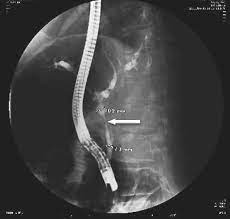

| Técnicas para su fabricación | |
| Se les llama prótesis pancreáticas a las protesis utilizadas para reducir la pancreatitis aguda en un 75%. Estas protesis que son dispositivos tubulares pueden ser fabricados a partir de teflón, polietileno o vinilo y se colocan en el conducto pancreático. |  |